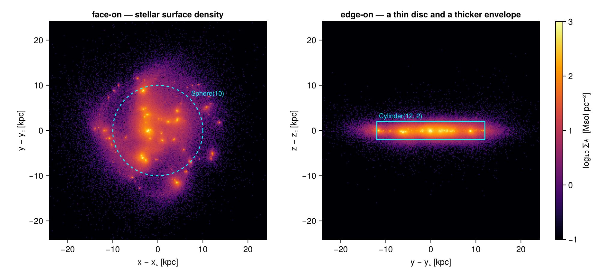
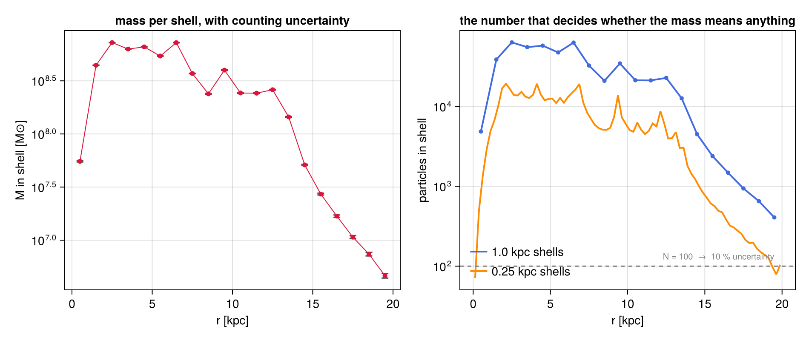
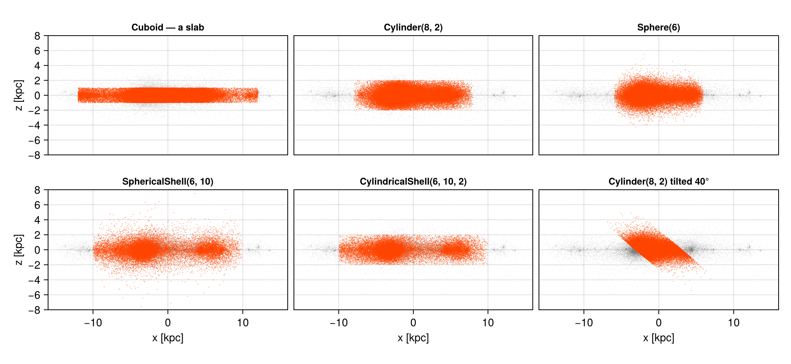
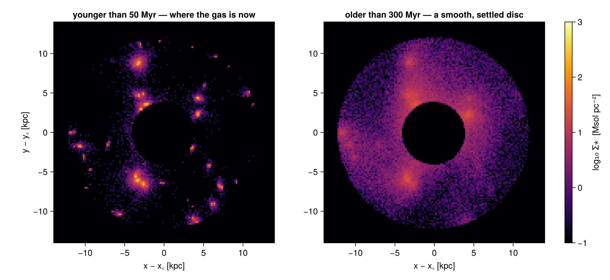
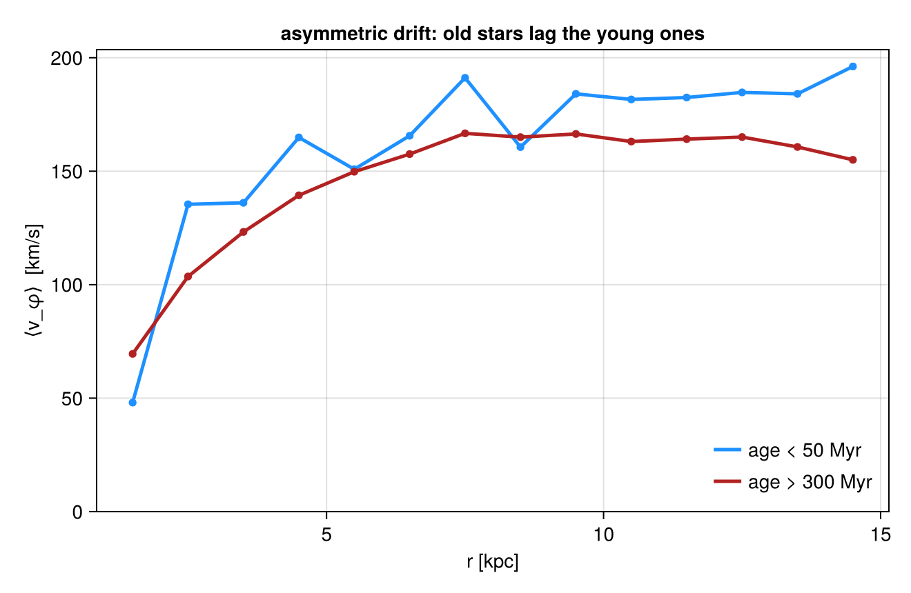
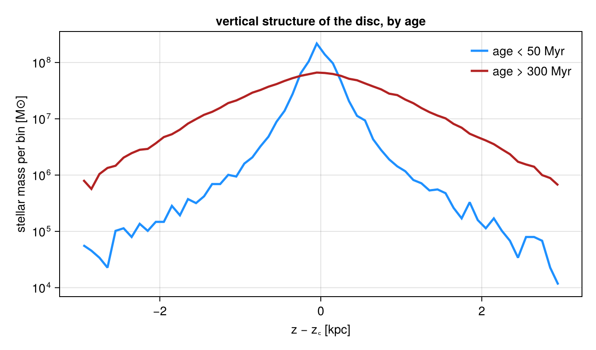

<!– GENERATED FILE. Do not edit this markdown. Source notebook: 03particlesGetSubregions.ipynb Regenerate with: MERADIR=<repo checkout> ./render_docs.sh Any edit here is lost the next time the docs are rendered. –>
3. Particles: Sub-Regions of a Point Population
This page is also an executable Jupyter notebook — open / download 03_particles_Get_Subregions.ipynb. The notebooks run end-to-end and double as part of Mera's test suite.
On an AMR grid a region boundary is a choice. A cell straddling the edge can be kept whole, judged by its centre, or split by volume fraction, and the hydro page is largely about the consequences of that choice.
For particles there is no choice to make. A star is a point: it is inside the region or it is outside, and msum over the selection is exact by construction. There is no :fraction column, no split keyword, no whole-cell/centre-test trade-off — the arithmetic that took the hydro page several sections to make trustworthy is free here.
What is not free is the counting. A region that selects exactly can still select almost nothing, and a mass built from eleven particles is exact and useless at the same time. So this page keeps the same region vocabulary and changes the question: not how is the boundary treated, but how many particles did this region actually catch, and what does that let me claim.
Reading convention. Longer code cells are cut in two by a banner line:
# ── figure code from here: panels, overlays, colorbars — no new Mera concepts ──Everything above the banner is the Mera part; everything below is Makie decoration.
On this page
- points, not cells
- one sphere, and arithmetic that cannot drift
- what replaces the boundary error: counting
- the geometry gallery
- composites and the
@regionblock - place and state: regions meet filters
- profiles that regions make easy
- reference: the classic symbol API
- practical guidance
1. Points, Not Cells
The same galaxy as the hydro and gravity pages, seen through its star particles. Each carries a position, a velocity, a mass, and a birth time — that last column is what makes §6 and §7 possible.
# Example-data root. Point this at your own simulation folder, or set the
# MERA_EXAMPLES environment variable; every path below is built from it.
MERA_EXAMPLES = get(ENV, "MERA_EXAMPLES", "/Volumes/FASTStorage/Simulations/Mera-Tests");
using Mera, CairoMakie
# Makie also exports geometric names (Sphere, Cylinder, ...) — state explicitly
# that we mean Mera's region types:
import Mera: Sphere, Cuboid, Cylinder, SphericalShell, CylindricalShell
CairoMakie.activate!()
path = "$MERA_EXAMPLES/RAMSES/manu_sim_sf_L14"
info = getinfo(400, path, verbose=false)
stars = getparticles(info, verbose=false, show_progress=false)
kpc = info.scale.kpc
age = getvar(stars, :age, :Myr)
println("particles : ", length(stars.data), " columns: ", keys(stars.data[1]))
println("with birth = 0 : ", count(iszero, getvar(stars, :birth)), " (dark matter, if any)")
println("total mass : ", round(msum(stars, :Msol), sigdigits=5), " Msol")
println("particle mass : ", round(minimum(getvar(stars, :mass, :Msol)), sigdigits=3), " – ",
round(maximum(getvar(stars, :mass, :Msol)), sigdigits=3), " Msol")
println("ages : ", round(minimum(age), digits=1), " – ",
round(maximum(age), digits=1), " Myr")
println("box : ", round(stars.boxlen * kpc, sigdigits=4), " kpc")*__ __ _______ ______ _______
| |_| | | _ | | _ |
| | ___| | || | |_| |
| | |___| |_||_| |
| | ___| __ | |
| ||_|| | |___| | | | _ |
|_| |_|_______|___| |_|__| |__|
Mera v1.9.0 | Julia 1.12.7 | 4 threads
particles : 508939 columns: (:level, :x, :y, :z, :id, :vx, :vy, :vz, :mass, :birth)
with birth = 0 : 0 (dark matter, if any)
total mass : 5.8044e9 Msol
particle mass : 4910.0 – 22700.0 Msol
ages : 0.0 – 531.0 Myr
box : 48.0 kpcEvery particle loaded here carries a non-zero birth time — this population is stars. Their combined mass, $5.8 \times 10^9\,M_\odot$, is worth remembering: the gravity page measures a dynamical mass ten times larger in the same volume, so whatever dominates this galaxy's potential is not in this file.
The ages matter for §6 and §7, so note their range now: every star here formed during the run, so the population spans zero to about 530 Myr and nothing is older. "Old" on this page therefore means a few hundred Myr, not a Hubble time — the contrasts below are between stars that formed in the last few tens of Myr and stars that have had a few disc orbits to settle.
# ─────────────────────────────────────────────────────────────────────
# FIGURE INFRASTRUCTURE for the whole page — skim freely on first read.
# The one Mera-relevant definition is `sproj`: the projection defaults every
# stellar surface-density map reuses.
# ─────────────────────────────────────────────────────────────────────
const SDLIM = (-1.0, 3.0) # log10 Σ* [Msol/pc²]
sproj(p; kwargs...) = projection(p, :sd, :Msol_pc2; direction=:z, center=[:bc],
pxsize=[0.2, :kpc], verbose=false, show_progress=false,
kwargs...)
function show_sd!(ax, p; flo=1e-2, decorate=false)
m = p.maps[:sd]
xs = range(p.cextent[1]*kpc, p.cextent[2]*kpc; length=size(m, 1))
ys = range(p.cextent[3]*kpc, p.cextent[4]*kpc; length=size(m, 2))
heatmap!(ax, xs, ys, log10.(max.(m, flo)); colormap=:inferno, colorrange=SDLIM)
ax.aspect = DataAspect()
ax.backgroundcolor = :black
decorate || hidedecorations!(ax)
return ax
end
sd_bar!(pos) = Colorbar(pos; colormap=:inferno, colorrange=SDLIM,
label="log₁₀ Σ⋆ [Msol pc⁻²]")
# positions of a particle object, in kpc relative to the box centre
pos(o) = (getvar(o, :x, :kpc, center=[:bc]),
getvar(o, :y, :kpc, center=[:bc]),
getvar(o, :z, :kpc, center=[:bc]))pos (generic function with 1 method)p_face = sproj(stars)
p_edge = sproj(stars; direction=:x)
# ── figure code from here: panels, overlays, colorbars — no new Mera concepts ──
fig = Figure(size=(1000, 460))
axf = Axis(fig[1, 1], title="face-on — stellar surface density",
xlabel="x − x꜀ [kpc]", ylabel="y − y꜀ [kpc]")
show_sd!(axf, p_face; decorate=true)
arc!(axf, Point2f(0, 0), 10., 0, 2π; color=:cyan, linewidth=1.5, linestyle=:dash)
text!(axf, 7.4, 7.4; text="Sphere(10)", color=:cyan, fontsize=11)
axe = Axis(fig[1, 2], title="edge-on — a thin disc and a thicker envelope",
xlabel="y − y꜀ [kpc]", ylabel="z − z꜀ [kpc]")
show_sd!(axe, p_edge; decorate=true)
lines!(axe, [-12., 12., 12., -12., -12.], [-2., -2., 2., 2., -2.];
color=:cyan, linewidth=1.5)
text!(axe, -11.5, 2.4; text="Cylinder(12, 2)", color=:cyan, fontsize=11)
sd_bar!(fig[1, 3])
fig
2. One Sphere, and Arithmetic That Cannot Drift
subregion takes the same region values as everywhere else. What it returns is a particle object holding a subset of the rows — nothing is weighted, nothing is partial.
Two consequences worth checking rather than assuming: a region and its complement partition the population exactly, and adjacent regions add.
sph = Sphere(10.) # center=[:bc], range_unit=:kpc by default
s_in = subregion(stars, sph, verbose=false)
s_out = subregion(stars, sph, inverse=true, verbose=false)
N, M = length(stars.data), msum(stars, :Msol)
println("all particles : ", rpad(N, 9), round(M, sigdigits=8), " Msol")
println("inside Sphere(10) : ", rpad(length(s_in.data), 9), round(msum(s_in, :Msol), sigdigits=8))
println("outside Sphere(10) : ", rpad(length(s_out.data), 9), round(msum(s_out, :Msol), sigdigits=8))
println()
println("count residual : ", length(s_in.data) + length(s_out.data) - N)
println("mass residual : ", (msum(s_in, :Msol) + msum(s_out, :Msol)) / M - 1,
" (floating-point summation only)")all particles : 508939 5.804426e9 Msol
inside Sphere(10) : 419529 4.7852795e9
outside Sphere(10) : 89410 1.0191465e9
count residual : 0
mass residual : 1.5543122344752192e-15 (floating-point summation only)The counts close on the nose — they are integers, and every particle is classified exactly once. The mass residual is a few units in the last place: not a boundary effect, just the order in which floating-point additions happen.
That is the whole story of exactness for particles, and it is worth appreciating how much cheaper it is than the grid version. The hydro page needed volume fractions on every boundary cell to make a budget balance; here additivity is a property of set membership.
3. What Replaces the Boundary Error: Counting
The error that does appear grows as regions get smaller. A population of points sampled in a shell gives a mass with a statistical uncertainty of roughly $M/\sqrt{N}$ — nothing to do with geometry, everything to do with how many particles the shell caught.
The table below walks a stack of spherical shells outward. Watch the count column, not the mass column.
edges = collect(0.0:1.0:20.0)
rows = NamedTuple[]
for i in 1:length(edges)-1
reg = i == 1 ? Sphere(edges[2]) : SphericalShell(edges[i], edges[i+1])
sh = subregion(stars, reg, verbose=false)
n = length(sh.data)
m = n == 0 ? 0.0 : msum(sh, :Msol)
push!(rows, (r=(edges[i]+edges[i+1])/2, n=n, m=m, err=n == 0 ? NaN : 100/sqrt(n)))
end
# the same walk with shells four times thinner — same regions, a quarter of the count
rt, nt = Float64[], Int[]
for r0 in 0.0:0.25:19.75
reg = r0 == 0 ? Sphere(0.25) : SphericalShell(r0, r0 + 0.25)
push!(rt, r0 + 0.125)
push!(nt, length(subregion(stars, reg, verbose=false).data))
end
println(rpad("shell [kpc]", 14), rpad("N", 9), rpad("M [Msol]", 13), "≈ 1/√N")
println("-"^46)
for t in rows[1:2:end]
println(rpad(string(t.r - 0.5, " – ", t.r + 0.5), 14), rpad(t.n, 9),
rpad(round(t.m, sigdigits=4), 13),
isnan(t.err) ? "—" : string(round(t.err, digits=1), " %"))
end
println()
println("thinnest bin, 1.00 kpc shells : N = ", minimum(rows[i].n for i in 1:length(rows)),
" → ", round(100/sqrt(minimum(t.n for t in rows)), digits=1), " %")
println("thinnest bin, 0.25 kpc shells : N = ", minimum(nt),
" → ", round(100/sqrt(max(minimum(nt), 1)), digits=1), " %")
# ── figure code from here: panels, overlays, colorbars — no new Mera concepts ──
fig = Figure(size=(950, 400))
ax1 = Axis(fig[1, 1], xlabel="r [kpc]", ylabel="M in shell [M⊙]", yscale=log10,
title="mass per shell, with counting uncertainty")
rr = [t.r for t in rows]; mm = [max(t.m, 1e3) for t in rows]
ee = min.([isnan(t.err) ? 0.0 : t.err/100 for t in rows] .* mm, 0.9 .* mm)
errorbars!(ax1, rr, mm, ee; whiskerwidth=8, color=:grey30)
scatter!(ax1, rr, mm; color=:crimson, markersize=8)
lines!(ax1, rr, mm; color=:crimson, linewidth=1)
ax2 = Axis(fig[1, 2], xlabel="r [kpc]", ylabel="particles in shell", yscale=log10,
title="the number that decides whether the mass means anything")
lines!(ax2, rr, [max(t.n, 1) for t in rows]; color=:royalblue, linewidth=2,
label="1.0 kpc shells")
scatter!(ax2, rr, [max(t.n, 1) for t in rows]; color=:royalblue, markersize=7)
lines!(ax2, rt, max.(nt, 1); color=:darkorange, linewidth=2, label="0.25 kpc shells")
hlines!(ax2, [100.]; color=:grey, linestyle=:dash)
text!(ax2, 19.5, 115; text="N = 100 → 10 % uncertainty", color=:grey, fontsize=10,
align=(:right, :bottom))
axislegend(ax2; position=:lb, framevisible=false)
figshell [kpc] N M [Msol] ≈ 1/√N
----------------------------------------------
0.0 – 1.0 4861 5.524e7 1.4 %
2.0 – 3.0 63583 7.246e8 0.4 %
4.0 – 5.0 57894 6.599e8 0.4 %
6.0 – 7.0 63201 7.236e8 0.4 %
8.0 – 9.0 21000 2.385e8 0.7 %
10.0 – 11.0 21326 2.43e8 0.7 %
12.0 – 13.0 22836 2.608e8 0.7 %
14.0 – 15.0 4500 5.113e7 1.5 %
16.0 – 17.0 1484 1.685e7 2.6 %
18.0 – 19.0 652 7.405e6 3.9 %
thinnest bin, 1.00 kpc shells : N = 408 → 5.0 %
thinnest bin, 0.25 kpc shells : N = 71 → 11.9 %
Inside 6 kpc each shell holds tens of thousands of particles and the mass is good to a fraction of a percent. Even the outermost 1-kpc shell still holds a few hundred, so this particular profile is trustworthy at the few-percent level everywhere — which is worth stating plainly, because the interesting part is that you could not have known it without looking.
Now halve the bin width twice. The orange curve is exactly the same sweep in 0.25 kpc shells: identical regions, identical arithmetic, a quarter of the particles per point, and the outer bins cross into double-digit uncertainty. Nothing about the selection changed — only how finely it was sliced.
The practical rule is therefore to choose bin widths by count, not by appearance. Equal-width bins look tidy and concentrate all the noise in the outermost points; widen the outer shells until they hold enough particles, and quote $N$ next to every value. The hydro page's advice about boundary treatment has no analogue here — this is its replacement.
4. The Geometry Gallery
Every region value type applies to particles, with the same keywords: center, range_unit, inverse=true for the complement, and axis to tilt a cylinder or a cylindrical shell. Only the boundary machinery is absent — split, nsub, refine, refine_to have nothing to act on, since a point has no volume to divide.
gallery = [
("Cuboid — a slab", Cuboid(xrange=[-12, 12], yrange=[-12, 12], zrange=[-1, 1])),
("Cylinder(8, 2)", Cylinder(8., 2.)),
("Sphere(6)", Sphere(6.)),
("SphericalShell(6, 10)", SphericalShell(6., 10.)),
("CylindricalShell(6, 10, 2)", CylindricalShell(6., 10., 2.)),
("Cylinder(8, 2) tilted 40°", Cylinder(8., 2.; axis=[sind(40), 0, cosd(40)])),
]
for (name, reg) in gallery
s = subregion(stars, reg, verbose=false)
println(rpad(name, 30), rpad(length(s.data), 9),
round(100*msum(s, :Msol)/msum(stars, :Msol), digits=1), " % of the stellar mass")
end
# ── figure code from here: panels, overlays, colorbars — no new Mera concepts ──
fig = Figure(size=(1020, 470))
xa, ya, za = pos(stars)
for (k, (name, reg)) in enumerate(gallery)
s = subregion(stars, reg, verbose=false)
x, y, z = pos(s)
row, col = fld(k-1, 3)+1, mod(k-1, 3)+1
ax = Axis(fig[row, col], title=name, titlesize=12,
xlabel=(row == 2 ? "x [kpc]" : ""), ylabel=(col == 1 ? "z [kpc]" : ""))
scatter!(ax, xa[1:20:end], za[1:20:end]; color=(:grey, 0.25), markersize=1)
scatter!(ax, x[1:5:end], z[1:5:end]; color=(:orangered, 0.5), markersize=1.6)
limits!(ax, -16, 16, -8, 8); ax.aspect = DataAspect()
row == 2 || hidexdecorations!(ax; grid=false)
col == 1 || hideydecorations!(ax; grid=false)
end
rowgap!(fig.layout, 4); colgap!(fig.layout, 8)
figCuboid — a slab 413099 81.2 % of the stellar mass
Cylinder(8, 2) 358054 70.3 % of the stellar mass
Sphere(6) 268097 52.6 % of the stellar mass
SphericalShell(6, 10) 151432 29.8 % of the stellar mass
CylindricalShell(6, 10, 2) 145216 28.6 % of the stellar mass
Cylinder(8, 2) tilted 40° 229964 45.2 % of the stellar mass
Every panel is the same edge-on view of the same population; grey is everything, orange is what the region kept. The tilted cylinder is the one to look at twice — axis=[sin 40°, 0, cos 40°] rotates the selection, not the data, which is what makes it usable on a warped or inclined disc.
5. Composites and the @region Block
Boolean composition — ∩ ∪ \ !, or intersect / union / setdiff if you prefer ASCII — behaves exactly as on the grid, and @region hoists the shared keywords out of a composite so the shapes stay readable.
∪ is typed in the Julia REPL and in VS Code as \cup followed by TAB; ∩ is \cap+TAB. The named functions are always available as an alternative.
halo_no_disc = @region unit=:kpc center=[:bc] begin
inner = Sphere(15)
disc = Cylinder(15, 2)
inner \ disc # spheroid minus the disc slab: the "off-plane" stars
end
s_halo = subregion(stars, halo_no_disc, verbose=false)
s_disc = subregion(stars, Cylinder(15., 2.), verbose=false)
s_ball = subregion(stars, Sphere(15.), verbose=false)
println("Sphere(15) : ", rpad(length(s_ball.data), 9),
round(msum(s_ball, :Msol), sigdigits=5), " Msol")
println(" ∩ disc slab : ", rpad(length(s_disc.data), 9),
round(msum(s_disc, :Msol), sigdigits=5))
println(" minus the slab (@region) : ", rpad(length(s_halo.data), 9),
round(msum(s_halo, :Msol), sigdigits=5))
println()
println("off-plane fraction of the inner stellar mass : ",
round(100*msum(s_halo, :Msol)/msum(s_ball, :Msol), digits=1), " %")
println("counts partition exactly : ",
length(s_halo.data) + length(subregion(s_ball, Cylinder(15., 2.), verbose=false).data)
== length(s_ball.data))Sphere(15) : 502097 5.7267e9 Msol
∩ disc slab : 489072 5.5788e9
minus the slab (@region) : 13101 1.4881e8
off-plane fraction of the inner stellar mass : 2.6 %
counts partition exactly : trueThe last line is the particle version of the hydro page's ledger check, and it is worth making a habit of: a composite and its complement, applied to the same parent, must reproduce the parent's count. On a grid that identity holds because fractions are complementary; here it holds because membership is a predicate. Either way, if it fails, the region is not describing what you think it describes.
Note also that subregion chains — subregion(s_ball, Cylinder(...)) narrows an already-selected object, because the return value is a full particle object of the same type.
6. Place and State: Regions Meet Filters
A region answers where. filterdata answers what: it selects on the value of any getvar quantity — age, speed, angular momentum, anything derived — and returns the same kind of object, so the two compose in either order.
Stars carry a birth time, so "young" and "old" are one condition away. The same annulus, split by age, is two very different objects.
annulus = CylindricalShell(4., 12., 2.) # the star-forming disc, minus the nucleus
ring = subregion(stars, annulus, verbose=false)
young = filterdata(ring, Below(:age, 50, unit=:Myr), verbose=false)
old = filterdata(ring, Above(:age, 300, unit=:Myr), verbose=false)
# order does not matter: filter first, then cut
young2 = subregion(filterdata(stars, Below(:age, 50, unit=:Myr), verbose=false),
annulus, verbose=false)
println("annulus 4–12 kpc, |z| < 2 : ", rpad(length(ring.data), 9),
round(msum(ring, :Msol), sigdigits=5), " Msol")
println(" younger than 50 Myr : ", rpad(length(young.data), 9),
round(msum(young, :Msol), sigdigits=5))
println(" older than 300 Myr : ", rpad(length(old.data), 9),
round(msum(old, :Msol), sigdigits=5))
println()
println("region∘filter == filter∘region : ", length(young.data) == length(young2.data))annulus 4–12 kpc, |z| < 2 : 286724 3.2728e9 Msol
younger than 50 Myr : 45119 5.2864e8
older than 300 Myr : 65342 7.4213e8
region∘filter == filter∘region : truep_young = sproj(young)
p_old = sproj(old)
# ── figure code from here: panels, overlays, colorbars — no new Mera concepts ──
fig = Figure(size=(1000, 460))
ax1 = Axis(fig[1, 1], title="younger than 50 Myr — where the gas is now",
xlabel="x − x꜀ [kpc]", ylabel="y − y꜀ [kpc]")
show_sd!(ax1, p_young; decorate=true); limits!(ax1, -14, 14, -14, 14)
ax2 = Axis(fig[1, 2], title="older than 300 Myr — a smooth, settled disc",
xlabel="x − x꜀ [kpc]")
show_sd!(ax2, p_old; decorate=true); limits!(ax2, -14, 14, -14, 14)
sd_bar!(fig[1, 3])
fig
Same region, same units, same colour scale — and two different galaxies. The young population traces the structure the gas has right now: clumpy, knotted, concentrated where star formation is happening. The old population has had time to phase-mix into a smooth axisymmetric disc.
That contrast is only visible because the geometric cut and the value cut are independent operations on the same object. The Masking & Filtering page treats the value side in full, including how to combine conditions with &, |, and !.
Place, State — and Type
The two axes above are where a particle is and what its values are. There is a third: what a particle is. RAMSES tags each one with a family code — dark matter, star, sink-cloud, debris, or a tracer (a test particle, advected by the flow without acting back on it). getparticlemask turns that tag into a mask, and it survives a region: subset first, select the type afterwards, or the other way round.
The galaxy on this page cannot show it. Written in the legacy particle format, it has no :family column — every particle here is a star, which is why §6 selects on :age instead. The compact public run below carries Monte-Carlo tracers, so the composition can be shown directly.
tracer_run = "$MERA_EXAMPLES/RAMSES-PUBLIC/sedov3d_grav_part"
if isdir(tracer_run)
tp = getparticles(getinfo(3, tracer_run, verbose=false), verbose=false, show_progress=false)
core = subregion(tp, Sphere(0.15; range_unit=:standard), verbose=false)
println("whole box : ", length(tp.data), " particles, families ",
Int.(sort(unique(getvar(tp, :family)))))
println("in a sphere : ", length(core.data), " particles")
println("…of which tracers: ", count(getparticlemask(core, :tracer, verbose=false)))
println(":family column survived the subregion: ",
:family in propertynames(Mera.columns(core.data)))
else
println("fixture not installed: ", tracer_run)
endwhole box : 124990 particles, families [0]
in a sphere : 1707 particles
…of which tracers: 1707
:family column survived the subregion: trueThe region kept a subset of rows and every column came with it, :family included — so a type mask built on the subregion is as valid as one built on the whole box. Region, value condition and particle type compose in any order, and none of them is a special case.
7. Profiles That Regions Make Easy
Two profiles, both built the same way: a stack of CylindricalShell annuli, each one a region, each one asked for a mass-weighted mean.
The first is rotation. Young stars inherit the near-circular orbits of the gas they formed from; old stars have been scattered, and a scattered population lags — its mean azimuthal speed falls below the circular speed by an amount that grows with its velocity dispersion. That is asymmetric drift, and it is one of the cleanest things a region stack can show.
r_ann = collect(1.5:1.0:14.5)
vy, vo, ny, no = Float64[], Float64[], Int[], Int[]
for r in r_ann
a = subregion(stars, CylindricalShell(r-0.5, r+0.5, 2.), verbose=false)
ay = filterdata(a, Below(:age, 50, unit=:Myr), verbose=false)
ao = filterdata(a, Above(:age, 300, unit=:Myr), verbose=false)
for (obj, v, n) in ((ay, vy, ny), (ao, vo, no))
k = length(obj.data)
push!(n, k)
if k > 0
m = getvar(obj, :mass, :Msol)
push!(v, sum(getvar(obj, :vϕ_cylinder, :km_s, center=[:bc]) .* m) / sum(m))
else
push!(v, NaN)
end
end
end
println("at 7.5 kpc : young ", round(vy[findfirst(==(7.5), r_ann)], digits=1),
" km/s (N=", ny[findfirst(==(7.5), r_ann)], ") old ",
round(vo[findfirst(==(7.5), r_ann)], digits=1),
" km/s (N=", no[findfirst(==(7.5), r_ann)], ")")
# ── figure code from here: panels, overlays, colorbars — no new Mera concepts ──
fig = Figure(size=(660, 430))
ax = Axis(fig[1, 1], xlabel="r [kpc]", ylabel="⟨v_φ⟩ [km/s]",
title="asymmetric drift: old stars lag the young ones")
lines!(ax, r_ann, vy; color=:dodgerblue, linewidth=2.5, label="age < 50 Myr")
scatter!(ax, r_ann, vy; color=:dodgerblue, markersize=8)
lines!(ax, r_ann, vo; color=:firebrick, linewidth=2.5, label="age > 300 Myr")
scatter!(ax, r_ann, vo; color=:firebrick, markersize=8)
axislegend(ax; position=:rb, framevisible=false)
ylims!(ax, 0, nothing)
fig[Mera] Hint: getvar(:vϕ_cylinder) has no `vcenter` — velocities are in the BOX frame.
`center=` fixes the origin; `vcenter=` fixes the frame, and they are separate.
For an object with bulk motion pass vcenter=:auto, or vcenter=bulk_velocity(obj).
Harmless if the object is already at rest in the box; on a halo streaming at
~200 km/s this shifted |J| by 34 % and its direction by ~5 degrees.
(shown once per session; verbose(false) silences Mera's messages)
at 7.5 kpc : young 191.2 km/s (N=2396) old 166.7 km/s (N=7878)
The gap between the two curves is the drift: about 25 km/s at 7.5 kpc, where the young stars are turning at 191 km/s and the older ones at 167. It is a real dynamical measurement, and it came from a stack of annuli and one age condition.
The second profile is vertical structure. The same age split, now measured perpendicular to the disc: a young population should be thin because it has not been heated yet.
disc = subregion(stars, Cylinder(12., 3.), verbose=false)
dyoung = filterdata(disc, Below(:age, 50, unit=:Myr), verbose=false)
dold = filterdata(disc, Above(:age, 300, unit=:Myr), verbose=false)
# mass-weighted RMS height — one number per population
function zrms(o)
z = getvar(o, :z, :kpc, center=[:bc]); m = getvar(o, :mass, :Msol)
sqrt(sum(m .* z.^2) / sum(m))
end
println("RMS height, age < 50 Myr : ", round(zrms(dyoung), digits=3), " kpc (N=",
length(dyoung.data), ")")
println("RMS height, age > 300 Myr : ", round(zrms(dold), digits=3), " kpc (N=",
length(dold.data), ")")
# ── figure code from here: panels, overlays, colorbars — no new Mera concepts ──
fig = Figure(size=(680, 400))
ax = Axis(fig[1, 1], xlabel="z − z꜀ [kpc]", ylabel="stellar mass per bin [M⊙]",
yscale=log10, title="vertical structure of the disc, by age")
for (o, c, l) in ((dyoung, :dodgerblue, "age < 50 Myr"), (dold, :firebrick, "age > 300 Myr"))
z = getvar(o, :z, :kpc, center=[:bc]); m = getvar(o, :mass, :Msol)
bins = range(-3, 3; length=61); mid = (bins[1:end-1] .+ bins[2:end]) ./ 2
h = [sum(m[(z .>= bins[i]) .& (z .< bins[i+1])]) for i in 1:length(bins)-1]
lines!(ax, mid, max.(h, 1e3); color=c, linewidth=2.5, label=l)
end
axislegend(ax; position=:rt, framevisible=false)
figRMS height, age < 50 Myr : 0.295 kpc (N=68020)
RMS height, age > 300 Myr : 0.871 kpc (N=103448)
A factor of three in RMS height between the two populations — 0.3 kpc against 0.87 kpc — in the same cylinder, from the same three lines of selection code. Stars are born in a thin gas layer and are scattered out of it afterwards, and a few hundred Myr is already enough to see it happen. The young profile is also visibly noisier in its wings: the counting story of §3, showing up again where the population thins out.
8. Reference: the Classic Symbol API
The symbol-based interface works on particle data unchanged and remains the quickest way to take an exploratory cut.
| Value type | Classic call |
|---|---|
Cuboid(xrange=…, yrange=…, zrange=…) | subregion(stars, :cuboid; xrange=…, …) |
Sphere(R) | subregion(stars, :sphere; radius=R) |
Cylinder(R, H) | subregion(stars, :cylinder; radius=R, height=H) (z-axis only) |
SphericalShell(rin, rout) | shellregion(stars, :sphere; radius=[rin, rout]) |
CylindricalShell(rin, rout, H) | shellregion(stars, :cylinder; radius=[rin, rout], height=H) |
Shared keywords: center, range_unit, inverse=true. The cell and split keywords of the grid interfaces have no meaning for points and are simply absent — which is why the classic and value-type selections agree exactly here, unlike on the hydro side.
classic = subregion(stars, :sphere; radius=10., center=[:bc], range_unit=:kpc, verbose=false)
value_t = subregion(stars, Sphere(10.), verbose=false)
println("classic :sphere : ", rpad(length(classic.data), 9), round(msum(classic, :Msol), sigdigits=8))
println("value-type Sphere: ", rpad(length(value_t.data), 9), round(msum(value_t, :Msol), sigdigits=8))
println("identical : ", length(classic.data) == length(value_t.data) &&
msum(classic, :Msol) == msum(value_t, :Msol))classic :sphere : 419529 4.7852795e9
value-type Sphere: 419529 4.7852795e9
identical : true9. Practical Guidance
Quote $N$ with every number. The selection is exact; the estimate built from it is not. A mass, a mean velocity, or a dispersion from a region is only as good as the count inside it, and $1/\sqrt{N}$ is the floor (§3).
Bin by count, not by looks. Equal-width annuli look tidy and put all the noise in the outermost points. Widen the outer bins until they hold enough particles.
Regions chain, and they commute with filters. subregion returns a full object, so cuts compose in any order and can be interleaved with filterdata (§6). Use that to keep each step meaning one thing.
Check partitions. A region plus its complement must reproduce the parent's count exactly. It is one line, it is free, and it catches a mis-specified centre or unit immediately (§2, §5).
split, nsub, refine_to do not apply. They are grid concepts. If you find yourself reaching for them on particles, the question you actually have is probably about counts.
Give getvar the same center as the region. Derived quantities like :vϕ_cylinder, :r_cylinder, and :z are measured about getvar's own center, which defaults to the box corner — a different argument from the region's. See §4 of the gravity page for what that costs when it is forgotten.
Summary
- For particles a region is a membership test, not a boundary treatment: no
:fraction, nosplit, andmsumover a selection is exact by construction. Partitions close to the last floating-point bit (§2). - The error that matters is statistical. Shell masses inherit a $1/\sqrt{N}$ uncertainty, which is what actually limits a profile's outer points (§3).
- All region value types, boolean composition,
@region, tilted axes, andinverse=truework exactly as on the grid (§4, §5). - Geometric selection and value filtering are independent and commute, which makes population splits — young vs old, fast vs slow — a one-line refinement of any region (§6).
- Stacks of annuli turn regions into profiles: asymmetric drift and the age–scale-height relation both fall out of a dozen region objects (§7).
Continue with:
- Hydro sub-regions — exact splitting, region algebra, and mass budgets on the grid.
- Gravity sub-regions — the same regions applied to the force field, and the mass this galaxy's stars do not account for.
- Clumps sub-regions — regions applied to a catalogue of extended objects represented by their peaks.
- Masking & Filtering — the value-space counterpart of this page.